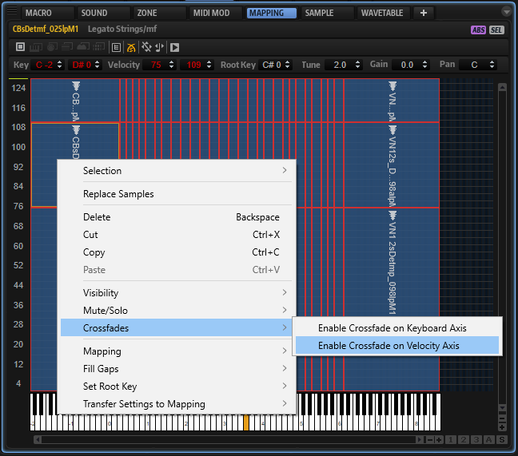
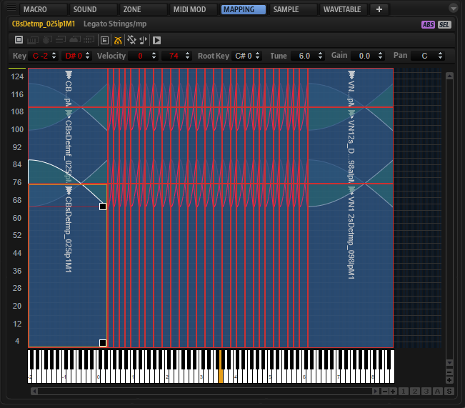
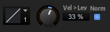

/ HALion Developer Resource / HALion Tutorials & Guidelines / Tutorials /
Using Velocity Crossfades
On this page:
- Prerequisite
- Activating Velocity Crossfades
- Using the Velocity Options
- Setting the Level Velocity
- Fine-Tuning the Velocity Crossfades
- Example VST Preset
The sampled velocities of an instrument usually have differences in timbre and level. Velocity crossfades allow you to blend between adjacent velocities for smoothing out these differences, which makes the instrument more playable and the sound more realistic.
Prerequisite
To set up velocity crossfades, you need a multi-sample with two or more velocity layers. The following example program has three velocity layers.
Loading the Example VST Preset
- Download Using Velocity Crossfades 01.vstpreset.
- Drag the VST preset to the Slot Rack.
❕ The example VST preset requires the factory content of HALion.
Activating Velocity Crossfades
Overview of Workflows
- Individual Velocity Mode and Velocity Fade must be activated for the layer containing the zones that you want to crossfade.
- Enable Crossfade on Velocity Axis must be activated for all zones that you want to crossfade.
- Adjust the fade handles in the Mapping editor using Crossfade: Symmetric.
Activating the Layer
The options Individual Velocity Mode and Velocity Fade can be found in the Sound editor.
- In the Program Tree, select the layer containing the zones that you want to crossfade.
- Open the Sound editor, go to the Trigger section and activate Individual Velocity Mode and Velocity Fade.

Activating the Zones
The option Enable Crossfade on Velocity Axis can be found in the context menu of the Mapping editor.
- Open the Mapping editor and select all zones.
- Right-click a zone and select Crossfades > Enable Crossfade on Velocity Axis.
❕ The Enable Crossfade on Velocity Axis option is grayed out and cannot be used if Individual Velocity Mode or Velocity Fade are not activated.

Adjusting the Velocity Crossfades
Velocity crossfades are adjusted with the fade handles in the Mapping editor.
❕ The fade handles are only visible if the options for the layer and zones have been activated, as described above. In addition, the zones must be selected and the zoom level must be high enough.
- In the toolbar of the Mapping editor, activate Crossfades: Symmetric .
- Select the zones that you want to crossfade or select all zones.
- Zoom in until you see the fade handles.
- Drag a fade handle to adjust the range of the crossfade.
- Drag one of the fade lines to adjust the curvature of the crossfade.

Using the Velocity Options
Once the velocity crossfades are set up in the Mapping editor, they can be used. You can crossfade the zones using the note-on velocity or by using the value of a MIDI controller, for example. The different usages are configured with the velocity options in the Trigger section of the corresponding layer. Which settings you must use depends on the requirements of your content. The following table lists the different requirements and the settings for the velocity options.
| # | Content Requirements | Velocity Mode | Velocity Fade | Description |
|---|---|---|---|---|
| 1 |
| Note-on | Off |
|
| 2 |
| Note-on | On |
|
| 3 |
| Controller | Off |
|
| 4 |
| Controller | On |
|
| 5 |
| Continuous | Off |
|
| 6 |
| Continuous | On |
|
We will use Velocity Mode Continuous and Velocity Fade On for the example VST preset.
- In the Program Tree, select the layer on which you activated the Individual Velocity Mode and Velocity Fade options.
- Open the Sound editor, go to the Trigger section and set Velocity Mode to "Continuous" and Controller to ""Modulation Wheel"".

- Play a note and use the modulation wheel.
Setting the Level Velocity
The overall dynamic range and response is determined by the Level Velocity settings of the amplitude envelope of the zone.

Depending on whether your samples are normalized or not, there are two basic concepts for setting up the level velocity.
If your samples are normalized:
- Choose a Level Velocity Curve. The Squared velocity curve is the most commonly used curve.
- Adjust the dynamic range with the Level Velocity parameter. The higher the value, the greater the dynamic range.

With these settings, the dynamic range and response is mainly determined by the level velocity settings of the zones.
If your samples are not normalized:
- Set the Level Velocity Curve to Linear.
- Activate Use Normalized Velocity.
- Increase the Level Velocity parameter for each velocity layer only as much as necessary until the crossfades sound smooth.

With these settings, the dynamic range and response is determined by the combination of the gains of the samples and the Level Velocity settings of the zones.
Fine-Tuning the Velocity Crossfades
To make the crossfades as seamless as possible, the pitches and the levels of the samples must match as closely as possible. For example, you might hear flanging or breaks in the level during the crossfade if the pitches and the levels of adjacent samples do not match. In the Mapping editor, you can adjust the pitch and the level for each sample individually.
- Go to the Mapping editor and select the sample that you want to adjust.
- Adjust the Tune and Gain parameters until the crossfade of adjacent samples sounds smooth.
Tips for adjusting the Pitches of the Samples
The velocity fades should be activated while adjusting the pitches.
- Play a note with a velocity within the range of a crossfade.
- Adjust the pitches of the adjacent samples until the flanging is minimized or gone.
Tips for adjusting the Gains of the Samples
When using normalized samples, it can be useful to switch off any velocity fades and level velocity settings while adjusting the gains in the Mapping editor.
- In the Program Tree, select the layer on which you activated the Individual Velocity Mode and Velocity Fade options.
- Open the Sound editor, go to the Trigger section and deactivate the Velocity Fade option.
- Open the Zone editor, go to the amplitude envelope and set Level Velocity to 0%.
Now, you hear only the differences in level and timbre between adjacent samples.
- In the Mapping editor, adjust the sample gains until you hear only changes in timbre.
Once you are happy with the gains, activate the Velocity Fade option on the layer and set the Level Velocity of the zones as desired.
Example VST Preset
In the example VST preset, the pitch and gain of each zone were adjusted in the Mapping editor - for smoother crossfades.
- Download Using Velocity Crossfades 02.vstpreset.
- Drag the preset to the Slot Rack.
- Play a note and use the modulation wheel.